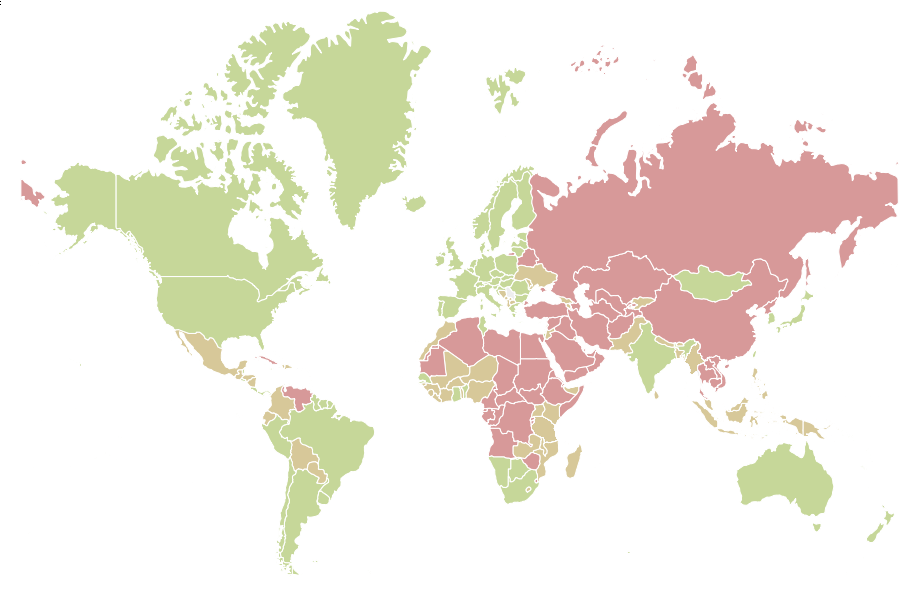
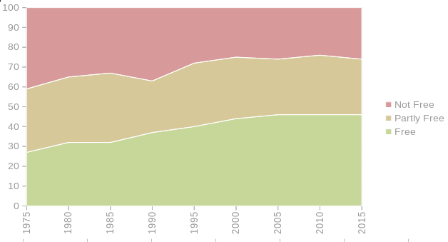
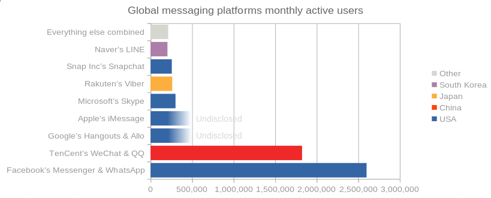
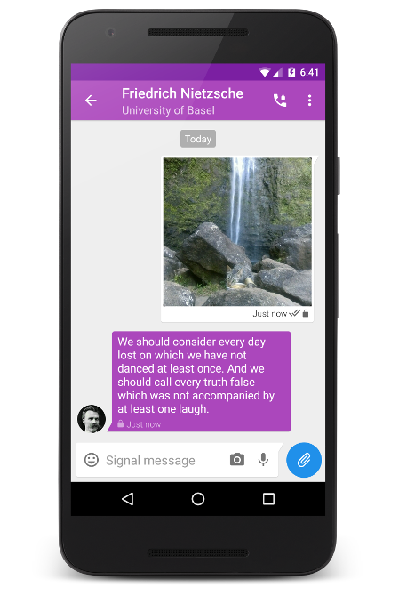

Earlier this year, I talked about how important digital privacy is (even if you don't think it is). I talked about political oppression, and how raising the awareness of basic digital privacy largely benefits those who are politically oppressed. Using secure services increases the amount of infrastructure dedicated towards them and raises the standards of digital security worldwide. But before we talk about how we make the first steps, let's remind ourselves why this is so important.

The map above shows the results of the 2018 Freedom in the World index, derived largely from the Universal Declaration of Human Rights. At the time, it was signed without competition by all UN member states. Green is free, yellow is partly free, and red is not free. As of 2018, more than half the countries in the world have issues.

There are quite a few ways to slice and dice freedom index data, but the general trend since the 1970s can be seen in the graph above - showing the distribution of free countries over time. Generally, since the 1970s, we've improved a bit, but largely stalled in the past 20 years. More than half the world still seems to have some problems in regard to political and civil liberties, and a few are getting worse. Of course, the above data is a gross simplification, so if you're interested in seeing more detailed and granular metrics I highly urge you to check other dimensions such as Our World In Data's Human Rights graphs.
The good news is that we all use the internet, and by using it we shape how it grows, and that allows us to make an impact on human rights. The World Economic Forum illustrates the link between digital privacy and human rights in the quote below:
Digital rights are basically human rights in the internet era. The rights to online privacy and freedom of expression, for example, are really extensions of the equal and inalienable rights laid out in the United Nation’s Universal Declaration of Human Rights.
As a case study, Facebook bi-anually releases a report called the Global Government Requests report (see the 2017 Global Government Requests Report blog post). In the first half of 2017, it shows that there were roughly 79,000 government requests for data for 115,000 user accounts. That's more than double what it was three years ago (35,000 user accounts). Every report sees an increase in the number of requests, easily growing more than 30% each year. Yikes! That's some serious compounding privacy interest!
However, there are steps we can take to raise the basic levels of digital privacy online. By adopting these technologies, we increase the global average cost per capita of digital mass surveillance -- and reduce its efficacy as a tool to control and oppress those in need.
Our online activity can largely be grouped into three categories, messaging, email, and web browsing. By changing a few habits in our day-to-day online activities, we can make a difference. In this article, we'll concentrate on messaging.
We send messages all the time - SMSes, through Facebook Messenger, WhatsApp, Skype, Google Hangouts and so on. If you're the statistically average user, you have 2 messaging apps, and they're both on the chart below. The data comes from Statista, and I've rehashed it slightly.

(note: due to a formatting error, you will need to multiply the horizontal axis by 1,000. So Facebook's numbers are over 2.5 billion!)
What you may not know is that big data on the internet is owned by a handful of companies, governed by a handful of countries. USA's Facebook and China's TenCent gathers more of your messages than probably everything else combined. These companies have little to no incentive to protect your data, actively create digital profiles of you, and are based in countries that have governments that are more than happy to ask for it to be disclosed. .
But don't listen to me, listen to Amnesty International's Encryption and Human Rights Report instead. Unless you're using Facebook's WhatsApp (which is the least bad), Amnesty International thinks you deserve a slap on the wrist. Worst of all messaging apps is China-based TenCent's QQ and WeChat, which scores a 0 out of 100 in protecting human rights. It has no encryption specification, does not recognise threats to human rights, made no commitment to freedom of expression, actively detects and censors content, and does not refuse backdoor implementations. So, if you send money through WeChat (yes, WeChat has higher transaction volumes than PayPal), guess what? It's public! We could go through the many examples of public data but I'll let you read the publication yourself and judge.
So what makes Facebook's WhatsApp the least bad? Well, for a start it has publicly stated there is no encryption backdoor - no built-in mechanism for sharing your data. It's more transparent and tries to notify you if your data is being requested, and produces bi-annual reports that we saw above. But perhaps the most effective secret sauce -- the gold-standard of digital humans rights protection -- is that it supports end-to-end encryption. This means that the moment your message leaves your device, nothing can read it.
WhatsApp's end-to-end encryption isn't it's own invention. Like any robust cryptography standard, it is based off free and open-source software. Many years ago, defectors from Twitter started a collaborative effort called Open Whisper Systems and developed the Signal secure messaging system. Signal is not owned by any company or country, is open-source, and primarily funded by the Freedom of the Press foundation. For instance, if you want to tip off The Guardian, Signal is one of your options.
However despite WhatsApp's best intentions in using the Signal system under the hood, its nature as a Facebook acquisition, organizational structure and some of its other technical decisions means that WhatsApp falls short of Signal's encryption standards. In short, WhatsApp retains metadata about your contacts and messages, which may be used to infer information about you (much more than you might think!). Luckily, the small core team that built the Signal system also have their own app, which is completely privacy focused. It looks just like any other messaging app out there, and anyone can use it if they truly want to get top-notch security and privacy. Here's a screenshot of it from the official Signal website. If you have an iPhone or Android, you can download it from the app store for free. It works on your computer with a computer app, and also works as a Signal command line app if you're a terminal junkie.

In fact, the core Signal app is such an ideal state of privacy in the messaging world that apart from earning a special mention in the Amnesty International report, it also earned a 50 million USD investment from the co-founder of WhatsApp. Brian Acton, the co-founder of WhatsApp, was around when WhatsApp made the initial jump to use Signal as its system under the hood, and after he left Facebook and WhatsApp, donated to create the Signal Foundation - a non profit organisation to protect data privacy, transparency, and open-source development, which aligns with Acton's personal beliefs.
If two people want a private conversation, electronic or not, they should be allowed to have it. - Brian Acton, WhatsApp co-founder
There's still so much to talk about, but let's stop here. I highly recommend that even if you do not fully understand the technical background behind encryption or the full extent of the humans rights impact, to take the first step and install Signal.
See you on the other side!
P.S. For the more technically inclined, you may instead be interested in setting up your own XMPP server that supports the OMEMO XEP. OMEMO is an implementation of the same cryptographic technique pioneered by the Signal protocol, and XMPP offers decentralised messaging, in contrast to Signal Messenger, which for all practical purposes is a centralised system (theoretically, it is possible for somebody to use the protocol and build in federation support).